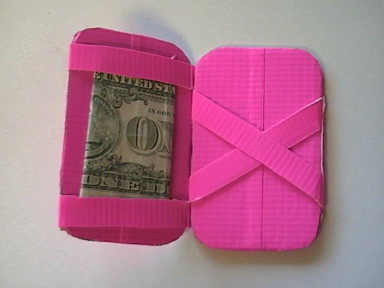
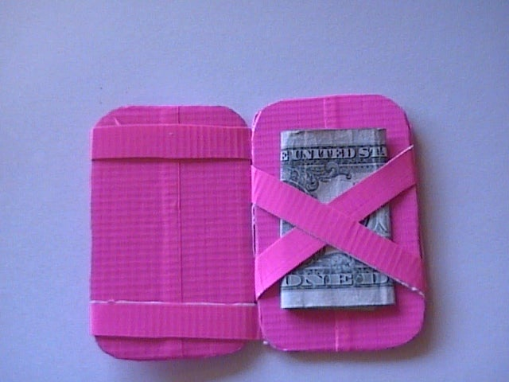

Magic Duct Tape Wallet

Tutorial Details
| Difficulty |
Time |
Cost |
| Easy |
20 minutes |
$ |
Materials
- Duct Tape
- Cardboard
- Scissors
- Pen or Marker
- Altoid Tin or other wallet size square(for tracing shape)
- A Dollar Bill (for testing)
Directions
- Trace and Cut. Trace the Altoid tin (the top, it's bigger), onto Cardboard twice, then cut it out.
- Cover Cardboard with Duct Tape, Cover each side of both pieces of cardboard with duct tape. Then trim the excess off of the sides. The wallet is not 100 percent duct tape, but if you don't use cardboard, it will be flimsy, and not work as well.
- Make the straps. Put two pieces of foot long duct tape on top of each other to create one big strap. Then cut the big one in half, hotdog style. Then take the two strips and cut them both hotdog style again to get four straps.
- Attach the Straps. You need to take two strips and attach them horizontally on one of the "cards" If you are using an Altoid tin, put them between one and two centimeters from the top and bottom. then secure with a piece of tape. If you are not using an Altoid tin, make sure that a dollar bill's height is longer than the space inbetween the straps.
Then, flip over the card so that the straps are on the left, under the card. As in picture three.
Next, fold the straps over the card, so that they go right. As in picture four.
Place the other card on top, so that the straps are sandwiched between the two cards. Then trim the straps so that they are one to two centimeters away from the edge.
Last, use a piece of tape to attach the strap ends to the back of the card on top.
- Attach the Other Straps. Now you need to attach the two other straps. Open the two cards and put the straps on the bottom card, in X formation. The two ends on the left need to go through the straps, as in picture one. Then place the top card on the bottom card again.
Trim the ends so that the straps are, once again, one centimeter away from the edges.
Make sure that the x straps do not overlap the horizontal straps, and that they are inbetween the horizontal straps.
Then tape the ends to the back of the cards. For the right side, tape the ends to the back card. For the left side, tape the ends to the front.

- Check Your Wallet. Get a dollar and open your wallet and put it in and close it. Then open it from the other side. It should flip back and forth.
- Optional: Create Pockets. If you want pockets for your ID, credit card, etc. you need to put about three inches of tape sticky side up on your wallet. then put another three inch strip on top of it, also sticky side up, so that you have a wide piece of tape. make sure it is wider than your card. then put some tape face down on it to cover the sticky stuff, and you have a pocket.
You can make as many pockets as you want, on the front and on the back.
Back to Top